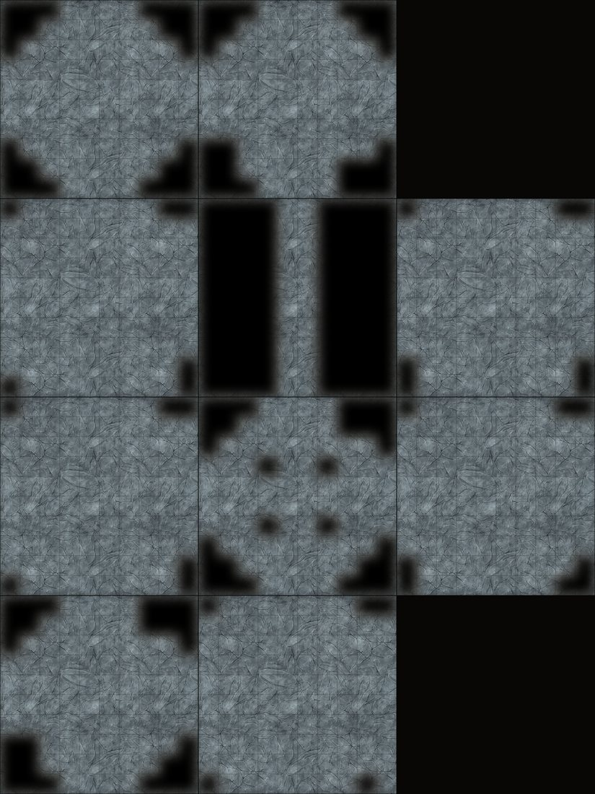
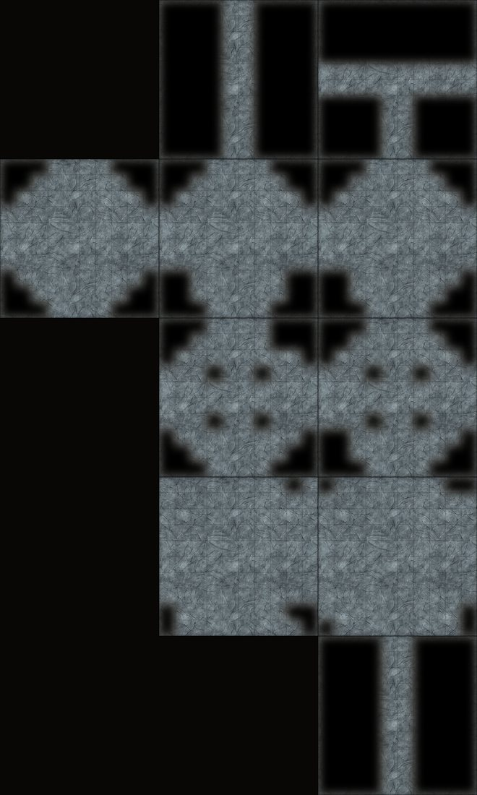

Il meccanismo dei giochi a tessere — Castle Ravenloft, Legend of Drizzt, Dungeon of the Mad Mage. Guardando i loro fogli montati si capisce che non è il profilo del cartoncino a fare l'irregolarità, e non è un margine attorno al pezzo. Sono tre cose, e la seconda è quella che conta.
| 1 · ingombro unico | Tutte le tessere sono lo stesso quadrato e si accostano su un reticolo. Il profilo a incastro è solo un aiuto meccanico — si può ignorare. |
|---|---|
| 2 · il pavimento arriva ai bordi | Dove due varchi si incontrano, le due stanze si fondono: non c'è una porta, c'è che lì la roccia non c'è. È questo che fa sembrare la mappa scavata invece che piastrellata — ed è l'opposto di quel che avevo fatto finora, dove ogni tessera era una stanza murata col suo perimetro. |
| 3 · la roccia sta dentro il pezzo | Masse scure addossate a bordi e angoli, disegnate diverse su ogni tessera. Accostando due pezzi, le rocce dell'uno si saldano a quelle dell'altro e il pavimento serpeggia in mezzo. |
Cinque caratteri (quanto è aperto un pezzo) per cinque forme d'uscita (fondo cieco, passante, angolo, raccordo a T, incrocio), per due varianti di roccia: cinquanta moduli su un ingombro solo. Le tessere sono generate dal pennello del gioco — non sono un disegno di come sarebbero.
Il pavimento occupa in media 64 caselle su 100: il resto è roccia. Ogni modulo è deterministico — stesso nome, stessa pietra, sempre — perché il cartoncino stampato e lo schermo devono dire la stessa cosa.
Nove pezzi ciascuno, pescati dagli stessi cinquanta. Le tessere si toccano: il suolo è continuo attraverso le giunture, e le rocce si saldano.


Il profilo che ne esce non è un rettangolo e non è una scacchiera: è una pianta scavata. E il modulo sotto è sempre lo stesso quadrato da 10×10.
La roccia sta quasi sempre agli angoli, e la mappa si legge come «stanze con gli angoli tagliati» più che come una caverna che serpeggia. Nel riferimento le masse entrano anche in mezzo ai lati e sono più grosse. È una taratura del rumore, non un cambio d'impianto.
Il bordo della roccia è sfocato. Le caselle quadrate si saldano con una sfocatura e un rialzo di contrasto — funziona per la forma, ma il taglio resta morbido dove nel riferimento è netto e frastagliato.
E soprattutto: questo mazzo non è ancora la campagna. Le 127 tessere degli episodi hanno nomi, arredi e uscite scritti nei dati; questi moduli sono pezzi anonimi generati da un carattere. Le due cose si incontrano solo se la Spedizione passa da mappe scritte a mappe pescate — che è una scelta di gioco, non di grafica, e non l'ho presa io.